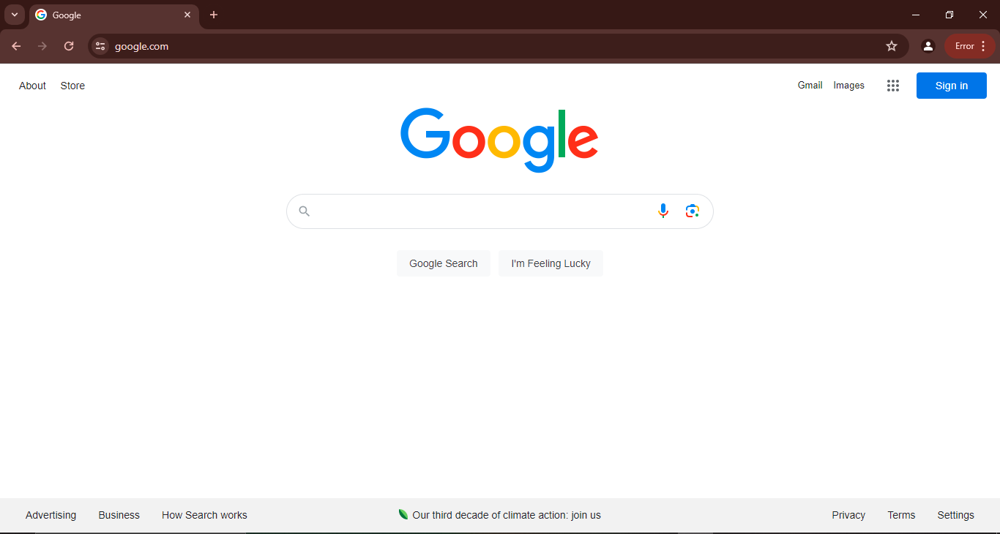

Rule Of Thirds
The Rule of thirds is a Compositional rule that tells peole to break an image into thirds horizontally and vertically.
This teqnique is done to ensure that everything on the webpage is aligned smoothly and allows for enough spacing to look presentable.
 Logrocket explination on Rule of thurds
Logrocket explination on Rule of thurds
Hick's Law
Hicks Law is the idea that the more choices someone has, the longer it takes for someone to make a decision
The best way to combat this is to minimize how much information you show on your page.
 Google
Alignment
Alingment is the idea that everyting is positioned in a straight line.
While Rule of thirds allows you to have more flexibility within pannels, alingment means that all elements on a page line up almost on top of each other with white space in between.
 The Childrens Center of Austin
The Childrens Center of Austin